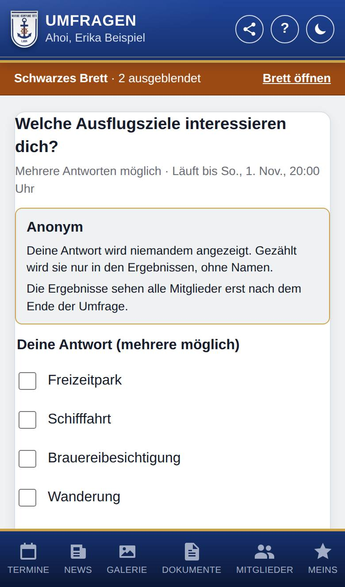
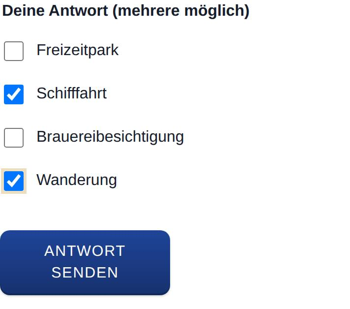
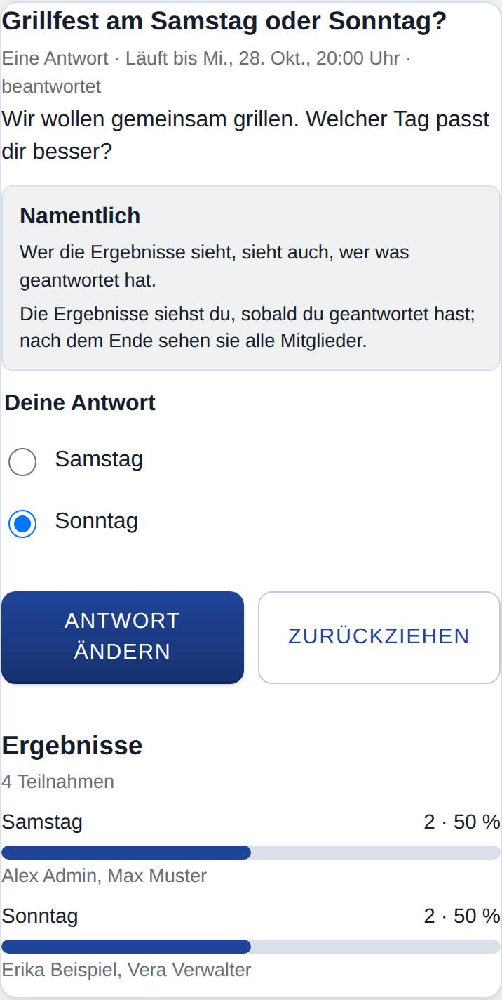

Umfrage beantworten
Nur, wenn Umfragen eingeschaltet ist.
Auf der Seite einer Umfrage gibst du deine Antwort ab, änderst sie oder ziehst sie zurück. Außerdem siehst du hier, ob die Umfrage namentlich oder anonym ist, und die Ergebnisse, sobald du sie sehen darfst.

So öffnest du die Seite
Tippe im Banner oben oder am Schwarzes Brett bei der Umfrage auf Teilnehmen (bzw. Antwort ansehen, wenn du schon geantwortet hast). Du kannst sie auch in der Liste der Umfragen antippen oder die Benachrichtigung zur Umfrage öffnen.
Was du hier siehst
- Frage: darunter die Art (Eine Antwort, Mehrere Antworten möglich oder Freitext), das Ende und, wenn du schon geantwortet hast, beantwortet. Darunter steht eine Beschreibung, wenn es eine gibt.
- Namentlich oder Anonym: ein Kasten, der erklärt, wer deine Antwort sieht und wann die Ergebnisse sichtbar werden.
- Deine Antwort: die Antwortmöglichkeiten zum Antippen oder ein Textfeld, dazu Antwort senden bzw. Antwort ändern und Zurückziehen.
- Ergebnisse: die Zahl der Teilnahmen und je Antwortmöglichkeit ein Balken mit Anzahl und Prozent, bei Freitext alle Antworten als Liste. Bei namentlichen Umfragen stehen die Namen dabei. Darfst du die Ergebnisse noch nicht sehen, steht dort, wer sie wann sieht.
- Zum Schwarzes Brett und Alle Umfragen: führen zum Brett bzw. zur Liste aller Umfragen.
So gehst du vor
Antworten
- Lies im Kasten, ob die Umfrage Namentlich oder Anonym ist.
- Tippe deine Antwort an. Bei Mehrere Antworten möglich tippst du alle an, die passen. Bei Freitext schreibst du deine Antwort ins Feld Antwort.
- Tippe auf Antwort senden.

Deine Antwort ändern oder zurückziehen
- Öffne die Umfrage. Deine Antwort ist schon ausgewählt.
- Wähle eine andere Antwort und tippe auf Antwort ändern.
- Oder tippe auf Zurückziehen und bestätige die Nachfrage. Dann zählt deine Antwort nicht mehr.

Gut zu wissen
- Namentlich: Wer die Ergebnisse sehen darf, sieht auch, wer was geantwortet hat.
- Anonym: Deine Antwort wird niemandem angezeigt, auch nicht denen, die die Umfragen verwalten. Sie zählt nur in den Ergebnissen mit, ohne Namen. Nur du selbst siehst, was du geantwortet hast.
- Wann du die Ergebnisse siehst, legt fest, wer die Umfrage anlegt: sobald du geantwortet hast (nach dem Ende dann alle Mitglied), erst nach dem Ende oder gar nicht (nur die Verwalter der Umfragen).
- Die Prozente beziehen sich auf alle, die teilgenommen haben. Bei Mehrere Antworten möglich ergeben sie zusammen deshalb oft mehr als 100 %.
- Ist die Umfrage beendet, zum angegebenen Ende oder vorzeitig, steht dort Die Umfrage ist beendet. Antworten lassen sich nicht mehr ändern. Antworten, ändern und zurückziehen geht dann nicht mehr.
- Eine Freitext-Antwort darf höchstens 1000 Zeichen lang sein.
- Hast du geantwortet, verschwindet die Umfrage aus dem Banner; am Schwarzes Brett steht sie dann mit beantwortet.